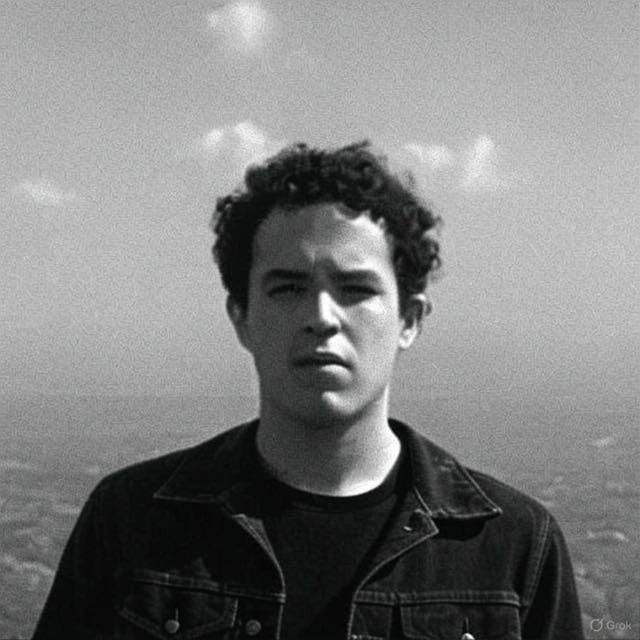

about brandon
Brandon is a Panamanian entrepreneur seeking connection with people who share his values of integrity and providing practical tools for decentralized freedom. VQZ was founded out of necessity after his father passed away, but it was fueled by his ambition to create something meaningful and break free from past constraints, building a legacy of stability and positive impact.
Driven yet never consumed by greed, Brandon is committed to solving complex problems through VQZ's ventures focused on enabling independent action and informed choices. He concentrates on tackling systemic inefficiency, exemplified by his FinTech platform Lulo, which equips people with clarity for personal loan advice in Panama. He champions practical, accessible education over outdated models, such as through his program 'Sovereigns,' which equips individuals to build advanced, efficient systems using low-code technology so they can achieve more by working smarter in a couple of weeks.
Beyond his work, Brandon finds clarity and refuels his vision through solitude, often writing his thoughts in his black notebooks. This personal time is crucial for pursuing his goal of strategic freedom—operating globally, building independence, and curating a life of purpose and tranquility. Yet, this need for introspection doesn't isolate him; he readily adapts and connects effectively in social settings when needed, navigating diverse environments with ease.
Strategic Freedom, Loyalty, respect, and unwavering transparency are at his core, guiding his personal relationships and business ethics. If you ever need help from someone committed to integrity-based impact, don't hesitate to reach out.
Driven yet never consumed by greed, Brandon is committed to solving complex problems through VQZ's ventures focused on enabling independent action and informed choices. He concentrates on tackling systemic inefficiency, exemplified by his FinTech platform Lulo, which equips people with clarity for personal loan advice in Panama. He champions practical, accessible education over outdated models, such as through his program 'Sovereigns,' which equips individuals to build advanced, efficient systems using low-code technology so they can achieve more by working smarter in a couple of weeks.
Beyond his work, Brandon finds clarity and refuels his vision through solitude, often writing his thoughts in his black notebooks. This personal time is crucial for pursuing his goal of strategic freedom—operating globally, building independence, and curating a life of purpose and tranquility. Yet, this need for introspection doesn't isolate him; he readily adapts and connects effectively in social settings when needed, navigating diverse environments with ease.
Strategic Freedom, Loyalty, respect, and unwavering transparency are at his core, guiding his personal relationships and business ethics. If you ever need help from someone committed to integrity-based impact, don't hesitate to reach out.
"In the conflict of the mind is where life belongs"
Founder & CEO